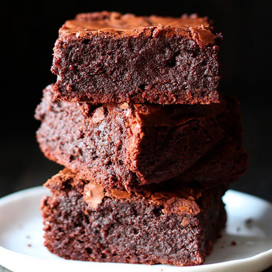

| 8 strawberries, halve |
Place strawberrries in blender |
| 2 tablespoons white sugar |
Top the strawberries with two table spoon of sugar |
| 7 cups of water |
Pour 1 cup of water over the sugared strawberries and blend until Strawberry chunks transform into juice |
| 1 cup of white sugar |
combined strawberry juice with six cups of water, 1 cup of sugar, and lemon juice in a large pitcher. |
| 2 cups of squeezed lemon juice/td>
| Put it on the blender |
| 1 table spoon of honey |
Blend it all together and serve |
Brownies

| 1/2 cup + 2 tablespoons salted butter |
Preheat oven to 350 degrees F. Line a metal 9x9 pan with parchment paper. |
| 1 cup granulated sugar |
Pour melted butter into a large mixing bowl. Whisk in sugar by hand until smooth, 30 seconds. |
| 2 large eggs |
Add in eggs and vanilla extract. Whisk 1 minute. |
| 2 teaspoons vanilla extract |
Whisk in melted chocolate until combined and smooth.. |
| 1/2 cups melted milk chocolate |
Use a rubber spatula to stir in flour, cocoa powder, and salt until just combined. Stir in whole chocolate chips. |
| 3/4 cup all-purpose flour |
Pour into prepared pan and smooth out. |
| 1/4 cup unsweetened cocoa powder |
Bake in the preheated oven for 30 minutes. Let cool in pan 30 minutes before slicing. |
| 1/2 teaspoon salt |
---------------- |
| 1 cup milk chocolate chips |
---------------- |
Fudge
| 2 cups white sugar |
Grease an 8x8 inch square baking pan. Set aside |
| 1/2 cup cocoa. |
Combine sugar, cocoa and milk in a medium saucepan. Stir to blend, then bring to a boil, stirring constantly. |
| 1 cup milk |
Reduce heat and simmer. Do not stir again. |
| 4 tablespoons butter |
Place candy thermometer in pan and cook until temperature reaches 238 degrees F(114 degrees C). If you are not using a thermometer, then cook until a drop of this mixture in a cup of cold water forms a soft ball. Feel the ball with your fingers to make sure it is the right consistency. It should flatten when pressed between your fingers. |
| 1 teaspoon vanilla extract |
Remove from heat. Add butter or margarine and vanilla extract. Beat with a wooden spoon until the fudge loses its sheen. Do not under beat. |
| ------------ |
Pour into prepared pan and let cool. Cut into about 60 squares. |
Cheeseburger

| 2 pounds freshly ground chuck, (at least 80% lean, a.k.a. 80/20) |
In a large bowl, mix ground beef, onion powder, salt and pepper until just combined. Do not overmix, or your patties will be tough. |
| 1 tablespoon onion powder |
Divide into six portions and form patties, without pressing too hard. They should be uniform in thickness. Smooth out any cracks using your fingers. Make these right before you grill them, so they stay at room temperature. |
1 teaspoon salt |
Preheat your grill, grill pan or cast-iron skillet to high heat and add burger patties. If using a grill, cover with the lid. |
1 teaspoon freshly ground black pepper |
Cook until the crust that forms on the bottom of the burger releases it from the pan or grate — about 2 minutes. Gently test, but don't flip it until it gets to this point. When burgers lift up easily, flip, add two slices of cheese to each, close lid if using a grill, and cook on the other side for another 2-3 minutes for medium to medium rare. |
12 slices deli-counter American cheese |
Remove burgers with a sturdy metal spatula and transfer to a plate. Allow to rest for several minutes, then transfer to buns. |
12 slices deli-counter American cheese |
Garnish as desired and serve immediately. |
6 large burger buns, preferably homemade, toasted if desired |
------------------------------------------------------------ |